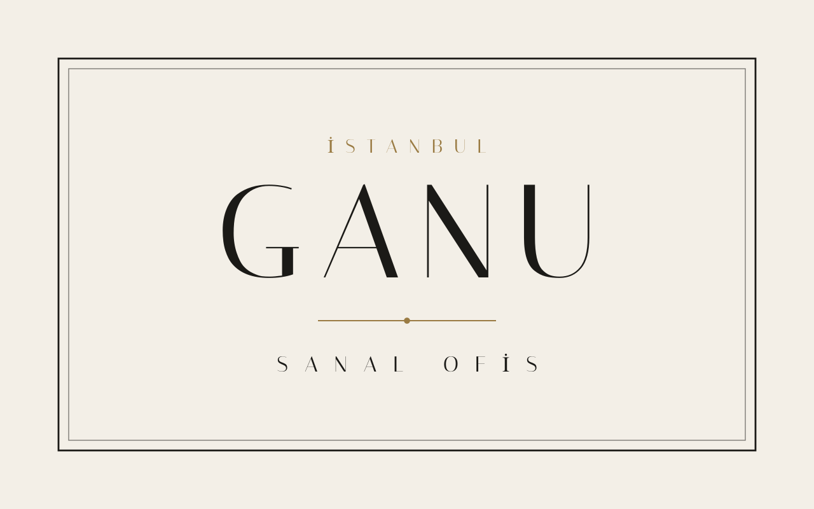
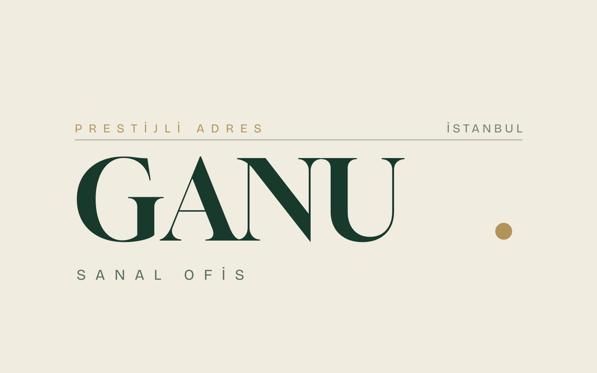
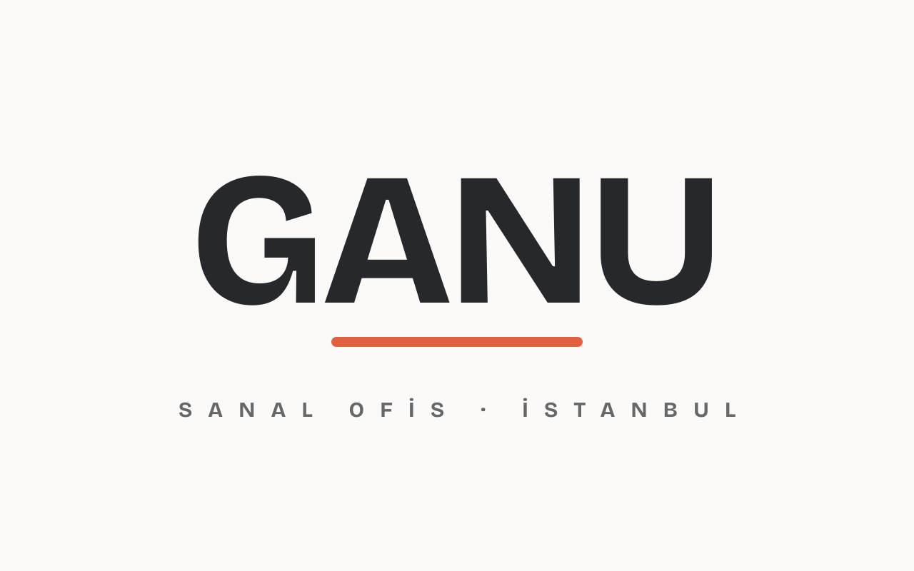

GANU — Premium tipografik yön
Bu sefer farklı bir kalite seviyesi: karakterli serif/grotesk fontlar, lacivert+amber yerine taze prestij paletleri, ve işlenmiş kompozisyon. İkon-klişesi yok — marka yazının kendisinde.
P1 — Plaka Italiana serif · Mürekkep & Kemik · kazınmış pirinç levha (prestijli adres) hissi, lüks

P2 — Editöryel Gloock yüksek-kontrast serif · Orman yeşili & Krem · cesur, dergi kapağı havası

P3 — Modern Bricolage grotesk · Kömür & Mercan · genç-girişimci, dinamik
